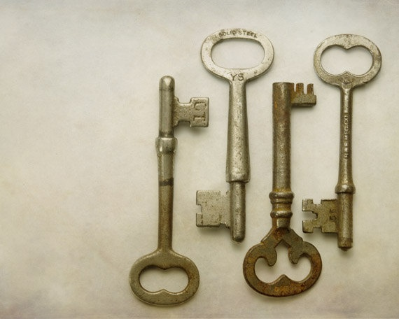

Introduksjon til oppgaven fra workshop med «Theater of Operations»
Denne oppgaven har jeg valgt å ta med i vurderingsmappen av flere grunner. Det var en av oppgavene jeg likte best å arbeide med, da den appellerte til mine kreative sider, og workshoppen med «Theater of Operations» (les mer om denne i selve oppgaven) gav meg ideer og inspirasjon til ulike arbeidsmetoder som kan anvendes også i klasserommet. Under workshoppen følte jeg at deltakerne ble utfordret til å «bringe seg selv» med inn i læringsmiljøet. Både gjennom å dele erfaringer, utveksle meninger, undre og utforske, og se saker fra ulike synspunkter i fellesskap. Dette kan knyttes opp mot både sosiokulturell læringsteori og dialog -og deltakerdemokratiske perspektiver. I skolesammenheng ser jeg her hvordan elever kan få trening i å utvikle demokratisk kompetanse gjennom å øve seg på lytting, ytring, argumentasjon, se ulike vinklinger på en sak og utvide sin forståelse rundt ulike tema, også kontroversielle og «voksne» tema som Palestina/Israel- konflikten.
Videre likte jeg at oppgaven ikke var en akademisk tekst. Det gav meg en utfordring i hvordan jeg skulle formidle budskapet, og gir vurderingsmappen litt variasjon for leseren. Variasjon i arbeidsmetoder og oppgaveform er noe jeg har stor tro på for at flere elever skal føle at de kan bidra med noe, mestrer, og kan delta i fellesskapet. Arbeidet med «Theater of Operations» åpnet for medvirkning; det var våre valg og bidrag som styrte deler av workshoppen. Underveis diskuterte deltakerne i workshoppen at det hele kunne føles litt «flytende» og at det kunne være vanskelig å se poenget, eller målet med det vi gjorde til tider. I ettertid tenker jeg at vi var for opptatt av et sluttresultat som kunne vurderes, mens det kanskje var prosessene underveis som i seg selv var målet? At vi blant annet skulle bidra til, delta aktivt, og erfare wokshoppen sammen satte i gang mange demokratiske prosesser og kunne i skolesammenheng gitt elever erfaringer med demokrati i praksis og bidratt til deres demokratiske utvikling.
Vurderingskriterier:
Til denne oppgaven skulle vi selv lage vurderingskriteriene. Jeg ønsker at denne oppgaven skal:
- Vise at jeg har arbeidet med målene fra emneplanen i bakhodet
- Vise at jeg kan se verdien av å bruke slike typer oppgaver i klasserommet og kan argumentere og reflektere over hvorfor det ville vært relevant
- Gi leseren et innblikk i min prosess i arbeidet og skape nysgjerrighet.
Læringsutbytter fra emneplanen som er relevant for oppgaven:
- Ferdigheter
- Studenten kan
- forklare og drøfte verdier, holdninger og ferdigheter som er relevant for demokratisk medborgerskap og menneskerettighetene
- organisere et læringsmiljø som stimulerer og utvikler demokratiske verdier, holdninger og ferdigheter
- forklare og drøfte hvordan en kan utvikle en skolekultur som fremmer opplæring i demokrati
- Generell kompetanse
- Studenten har
- utviklet evnen til kritisk å kunne analysere og utvikle personlig og profesjonell kompetanse som lærer i et demokratisk læringsmiljø
- styrket evnen til å modellere og utvikle demokratiske ideal og prinsipper i klasserommet og i skolen som organisasjon
Les oppgaven her.